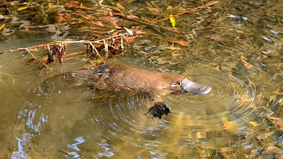
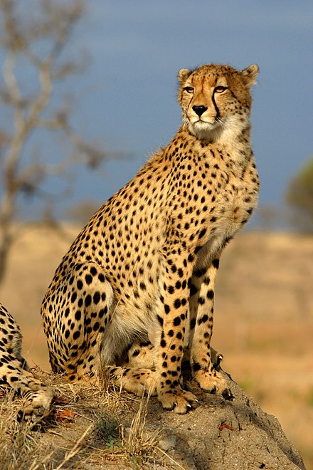
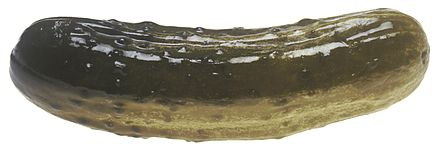

The platypus (Ornithorhynchus anatinus), sometimes referred to as the duck-billed platypus, is a semiaquatic egg-laying mammal endemic to eastern Australia, including Tasmania. The platypus is the sole living representative of its family (Ornithorhynchidae) and genus (Ornithorhynchus), though a number of related species appear in the fossil record.
 The cheetah (Acinonyx jubatus) is a large cat native to Africa and central Iran. It is the fastest land animal, capable of running at 80 to 128 km/h (50 to 80 mph), and as such has several adaptations for speed, including a light build, long thin legs and a long tail. Cheetahs typically reach 67–94 cm (26–37 in) at the shoulder, and the head-and-body length is between 1.1 and 1.5 m (3.6 and 4.9 ft). Adults typically weigh between 20 and 65 kg (44 and 143 lb). Its head is small, rounded, and has a short snout and black tear-like facial streaks. The coat is typically tawny to creamy white or pale buff and is mostly covered with evenly spaced, solid black spots. Four subspecies are recognised.
 The Polish- or German-style pickled cucumber (Polish: ogórek kiszony/kwaszony; German: Salzgurken), was developed in the northern parts of central and eastern Europe. It has been exported worldwide and is found in the cuisines of many countries, including the United States, where it was introduced by immigrants. It is sour, similar to the kosher dill, but tends to be seasoned differently. Traditionally, pickles were preserved in wooden barrels, but are now sold in glass jars. A cucumber only pickled for a few days is different in taste (less sour) than one pickled for a longer time and is called ogórek małosolny, which literally means "low-salt cucumber." This distinction is similar to the one between half- and full-sour types of kosher dills (see above). Another kind of pickled cucumber popular in Poland is ogórek konserwowy ("preserved cucumber") which is rather sweet and vinegary in taste, due to different composition of the preserving solution.